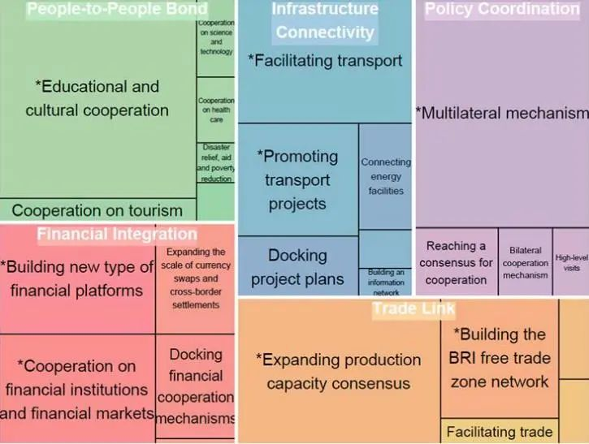
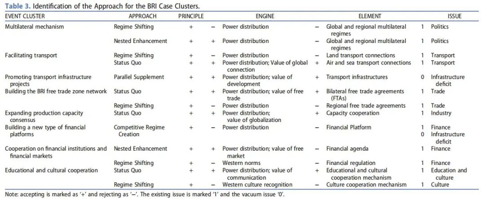
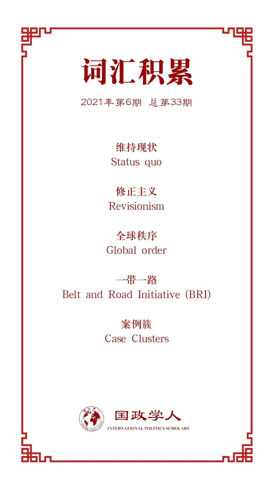

收录于合集

作品简介
【作者】 Lina Liu，清华大学国际关系系博士后，瑞士苏黎世联邦理工学院(ETH)的比较与国际研究中心博士，研究重点为中国外交政策。
【编译】 孙唯一（国政学人编译员，大连外国语大学国际关系学院）
【校对】 孟晓宇、黎开朗
【审核】 阮镇炜
【排版】 韩心蕊
【美编 】李九阳
【来源】 Lina Liu (2021) Beyond the status quo and revisionism: an analysis of the role of China and the approaches of China’s Belt and Road Initiative (BRI) to the global order, Asian Journal of Political Science , 29:1, 88-109, DOI: 10.1080/02185377.2020.1837193
【归档】 《国际关系前沿》2021年第6期，总第33期。
期刊简介
Asian Journal of Political Science (AJPS) 是首尔国立大学亚洲中心的国际参考期刊。自1993年出版以来，AJPS即为有关亚洲政治和治理的主要杂志。它在政治学的主要领域发表高质量的原创文章，包括比较政治、政治思想、国际关系、公共政策和公共行政。AJPS旨在解决亚洲（尤其是东亚、南亚和东南亚）地方、国家和全球层面的问题。
超越“维持现状”与“修正主义”：
中国的角色与“一带一路”对全球秩序的影响分析
Beyond the status quo and revisionism:
an analysis of the role of China and the approaches of China’s Belt and Road Initiative (BRI) to the global order
Lina Liu
内容提要
为更好地回答中国在当今全球秩序中扮演的角色这一问题，本文超越了国家作为“维持现状国”或“修正主义国”角色的单一、静态的观点。作者更为细致地划分了国家角色的定位及其与全球秩序互动的方式，包括 “维持现状”（Status Quo）、“平行补充”（Parallel Supplement）、“嵌套强化”（Nested Enhancement）、“制度转变”（Regime Shifting）、“竞争性制度创建”（Competitive Regime Creation）和“意识形态对抗”（Ideological Confrontation） 六类。通过对“一带一路”1889个事件的编码和对8类最具代表性的案例簇（case clusters）的一致性分析（congruence analysis），本文认为中国在全球秩序中扮演着规则接受者、规则改革者、规则打破者和规则创新者的多重角色。本文兼具理论意义和实践意义：不仅改进了对各国对待全球秩序的方式的分类，还有助于解释新兴大国在全球秩序中的作用。通过设计“一带一路”指数（the BRI index）和对案例簇进行编码，为分析“一带一路”这一案例提供了新的方式。
文章导读
01
超越“维持现状”与“修正主义”的二分法
当今中国日益重要的国际地位被普遍认同，但对于中国在既有全球秩序中扮演的角色却存在不同观点。现实主义者和权力转移理论的支持者将崛起的大国视为“修正主义国”，认为它们将挑战既有的全球秩序，并建立符合其自身国家需要的新秩序；自由主义者和制度主义者则认为，崛起大国倾向于合作，能够融入既有国际秩序。然而，这两种看法都是单一的、静态的，前者过度简化了复杂的现实环境，而后者则过于强调全球秩序对国家行为的制度性限制，且低估了国家在制度建设方面所起的作用。同时，学者们普遍以二分法将国家划分为“维持现状国”和“修正主义国”，认为国家的目的是在既有权力分配的基础上获得物质利益。然而，除了物质利益以外，身份（identity）和认同（recognition）也是影响国家行为的重要因素。本文超越了“维持现状”和“修正主义”的二分法，并为解释国家围绕全球秩序而产生的国家行为提供了一个充分的框架。
既有研究除了过于简化国家的意图外，还普遍忽视了国家在不同层面上改变全球秩序的可能性。Johnston提出了五个指标来评估一个国家是否属于维持现状型国家，但其既没有系统地界定全球秩序，也没有区分这五项指标的“修正”层级。拒绝权力分配应该被视为是比拒绝一个制度的特定规则或议程更激进的行为。本文试图填补的另一个空白则是区分当前全球秩序所涵盖的问题和有待商定的议题，这也意味着不同国家行为方式有着不同的“修正”层级。本文摒弃了传统的国家角色类型学，试图基于国家对全球秩序不同组成部分和问题的行为，详细阐述六种国家行为方式，以填补中国在当前全球秩序中的角色和行为模式相关研究的空白。
02
国家影响全球秩序的方式
由于再分配不是国家的唯一目标，国家需要考虑折中的或额外的选择以获得尊重、威望和声誉。“维持现状”和“修正主义”的类型过于宽泛，因此本文采用类型学方式来更加系统地揭示国家与全球秩序的关系。本文 通过三个变量区分这六种方式：全球秩序、议题和行为 。全球秩序由原则（principle）、动力（engine）和元素（element）三个子变量组成；议题可以是既存的，也可以是尚未提出的；国家行为分为接受或拒绝全球秩序的组成部分和当前的议题。当否决的对象依次从原则到动力、元素、具体议题时，“修正”层级下降。因此，本文将其“修正”层级从大到小依次为： “意识形态对抗” >“竞争性制度创建”>“制度转变”>“嵌套强化”>“平行补充”>“维持现状”。
“维持现状”往往指国家倾向于更深入地融入国际社会。 这些国家可能处于不同的情况。它们可以是小国，在贸易、投资和安全方面强烈依赖其他国家，并从中获益。一些“维持现状国”是受益于当前秩序的新兴大国，这些国家也希望更好地融入国际社会，以获取利益和扩大影响力。“维持现状国”也可能是那些从当前全球体系中获胜并希望保持其领导地位和特权的国家。这些国家通常无意挑战目前的权力平衡和规范价值观，并试图寻求和维持国际社会其他国家的承认。
“平行补充”指建立全球秩序的补充性机制，其目的是为了应对基础设施需求、全球公共卫生危机、经济衰退和保护主义等新的挑战，并促进一些仍然支离破碎、缺乏紧密联系的地区的一体化。 采取这种方式的国家不是规则的破坏者，而是通过制度创新来构建全球秩序的规则创新者。 由于这种做法不违背当前全球秩序的原则、动力和元素，因此，此类国家可以消除其他国家对其行为的疑虑并使其更容易被接受。这表明，提供公共物品能提高供给国的威望。
“嵌套强化”意味着将新的实践结合到现有制度上，以提高制度整体的治理能力。 一些国家搭上了西方强国提供的公共产品的便车，接受国际体系中的合作、自由的规范，但其仍然不满于某些制度安排。尽管这些国家仍然遵循西方的领导和规范（全球秩序组成部分中的动力），但它们试图在全球秩序的元素层面上改革部分制度。“嵌套强化”是一种介于“维持现状”和“修正主义”之间的模式，既迎合了各国的需求，又能使自身获得更多的威望、地位和尊重。
对权力再分配、有效性和不同利益的需求将鼓励对此感到不满意的国家寻找替代选择。与“嵌套强化”相比， 寻求外部机制的方式意在降低既存权力分配和规范价值观的效用 ，从而拒绝当前全球秩序的动力和元素 。“竞争性多边主义”方式下有两个子类型：“制度转变”指国家或国家联盟转移到另一个现存的、决策规则对其更为有利的制度，以加强制度的复杂性，削弱原有制度的权威，从而重新分配在某一特定问题上的进行制度安排的权力。“竞争性制度创建”指国家或国家联盟直接建立新的更能体现其利益的制度，挑战现有的规范或权力分配。与“制度转变”相比，“竞争性制度创建”是与现有秩序的元素和动力的正面对抗。
“意识形态对抗”则是对既有全球秩序原则的直接挑战 ，即国家或国家联盟提出一项新的原则，在意识形态上与现有原则对抗。这种互动方式将相应地改变全球秩序的动力和元素，从而彻底颠覆既存的全球秩序。自由国际主义原则是西方主导的全球秩序的价值观和具体元素，其是该秩序的的基本组成部分。然而，随着主导国地位的下降，这种信念会越来越分散和不一致。
03
“一带一路”案例聚类分析
以往的研究通常考察“一带一路”的一些内容，如亚投行、铁路建设、人民币国际化等。然而，它们无法确定哪些是官方文件中强调的事件，哪些是在实际运行中更重要的事件。本文从官方文件和实际运行两方面来确定具有代表性的“一带一路”事件。同时，本文认为许多案例簇比单个案例更能具有代表性。例如，亚投行、丝绸之路基金和金砖国家新开发银行的成立，实际上都属于构建新型金融平台这一案例簇。没有一个案例可以单独代表“一带一路”，但如果事件频繁重复，一种类型的案例群可以更有效地解释“一带一路”的真实行为。 按照编码步骤和标准，本文对收集到的1889个“一带一路”事件进行编码，形成了26个案例簇；再根据事件频率，选择了“（一带一路）五通”的代表性案例集群；之后又选择了八种类型的代表性案例集群，占事件案例总数的74%。 如下图所示，每个方块的大小表示每个案例簇的权重。

图1
1.多边机制（Multilateral mechanism）案例簇包括通过支持现有多边机制和建立新的区域和全球制度来促进“一带一路”合作的实施。
2.运输便利化（Facilitating transport）案例簇是指通过统一跨国运输线路、简化海关手续和统一运输标准，使国际公路、海洋和航空运输便利化的“一带一路”有关事件。这些事件被描述为“软连接”，符合全球合作的自由价值观。
3.促进交通事件（Promoting transport projects）案例簇中的事件的特征多以“硬连接”为目标，推动交通事件在亚洲、非洲和欧洲落地实施。“硬连接”案例簇的显著特点是填补欧亚大陆的基础设施缺口。
4.建立“一带一路”自由贸易区网络（Building the BRI free trade zone network）案例簇包括与“一带一路”沿线国家签订贸易协定以创造更具包容性的自由贸易的事件。具体包括中国努力推进与发达国家和发展中国家的双边自由贸易协定和中国参与区域自由贸易协定两类。
5.扩大产能共识（Expanding production capacity consensus）案例簇下的事件旨在鼓励中国产业“走出去”，吸引更多的外国投资到中国，从而提高中国与“一带一路”国家合作的能力。
6.构建新型金融平台（Building a new type of financial platforms）案例簇包括亚洲基础设施投资银行（AIIB）、丝绸之路基金和金砖国家新开发银行（NDB）等。
7.合作金融制度和金融市场（Cooperating financial institutions and financial markets）案例簇是指中国鼓励中国金融制度参与“一带一路”，并与世界市场的其他制度开展合作。
8.促进教育和文化合作（Educational and cultural cooperation）案例簇包括提供奖学金、签署协议、设立中国文化中心和孔子学院、举办文化博览会和文化节以及提供文化遗产保护援助。教育文化合作是中国扩大软实力影响、增进其他国家对其政策的理解的公共外交方式。
这八类“一带一路”案例簇与其对应的中国对待全球秩序的方式如下图所示：

图2
由此可以发现， 中国在实施“一带一路”战略时，在世界舞台上扮演着规则接受者、规则改革者、规则打破者和规则创新者的多重角色 。这超越了规则接受者和规则打破者的二元观点。“维持现状”、“平行补充”和“嵌套强化”的方式占据了“一带一路”案例簇的一半以上。此外，相比于“建立竞争制度”，中国更常采用“制度转变”的方式影响全球秩序，因为支持一个替代制度比建立一个正面对抗的竞争性制度更容易被接受。建立一个新制度通常需要付出很多努力才能在世界舞台上建立合法性，这就解释了中国鼓励发达国家加入亚投行的原因。
本文的研究结果表明， 我们需要对新兴大国的行为采取一种更包容的态度，对全球秩序的解释应该考虑当今时代的新动态 。“status quo”在拉丁文中的字面意思是“我们目前的状况”。Womack提出了一个新的术语“status ad quem”，即“我们未来所处的状况”。西方的影响，尤其是美国霸权的稳固性，正在削弱。后霸权时代的特点是规范和价值观多元化、多层次的国际行为体，以及中国等国家的影响力和领导力不断增强。对于一个面向未来新常态的大国（a status ad quem power）而言，其政策在新兴的秩序中是恰当的、可持续的。由新冠疫情引发的全球公共卫生危机是一个很好的检验例子，它可以考验一个面向未来新常态的大国（a status ad quem power）能否在全球卫生治理中肩负起掌舵者的责任。因此，尽管像中国这样的一些新兴大国可能不会“维持现状”，但将它们定义为“修正主义国”仍然是武断的。“一带一路”若干事件的实施符合新时代的发展趋势，如填补基础设施空白，解决内陆和沿海地区发展不平衡的问题等。
译者评述
随着中国综合国力的增强和在国际事务中参与程度的提高，世界不同国家对于中国这一迅速崛起的新兴大国抱持着不同的态度。以美国为首的部分国家以“中国威胁论”曲解中国的政策、行动，以遏制中国的发展。和平崛起一直是中国追求的目标，中国也秉持着“己欲利而利人，己欲达而达人”的哲学态度，希望将自身发展与同世界的共同进步相结合。习近平主席所提出的“人类命运共同体”理念就是中国态度的体现，中国也在用实际行动践行这一理念。
本文详细区分了新兴大国影响国际秩序的六种方式，并选取了八个案例簇具体比较了“一带一路”与这六种国家影响国际秩序方式的契合程度，从而指出 中国在国际上扮演着规则接受者、改革者、打破者和创新者等多重角色 。当今以“和平与发展”为主题的国际秩序具有其进步性，中国在发展过程中同样感受到了既有秩序下的发展红利。然而，在发展的过程中，中国也发现了既有国际秩序对处于弱势地位国家的不合理、不公平之处。因此，中国希望当自身成为体系中的强国之时，能够在参与既有秩序的基础上，改革、建设国际秩序，以缩小国家间的发展差距，真正实现各个国家的共同发展，实现人与自然的和谐发展。中国在国际秩序中扮演的多重角色看似有矛盾之处，但实际上都是为实现这一目标而服务的。
注释
[1]门洪华.建构中国大战略的框架：国家实力、战略观念与国际制度（第二版）[M].北京大学出版社.2017.
[2]阎学通.外交转型、利益排序与大国崛起[J].战略决策研究,2017,8(03):4-11.
[3]王缉思.中国的国际定位问题与“韬光养晦、有所作为”的战略思想[J].国际问题研究,2011(02):4-9+71.
词汇整理

文章观点不代表本平台观点，本平台评译分享的文章均出于专业学习之用, 不以任何盈利为目的，内容主要呈现对原文的介绍，原文内容请通过各高校购买的数据库自行下载。
好好学习，天天“在看”
国政学人
支持学术公益与知识传播
微信扫一扫赞赏作者 __赞赏
已喜欢，对作者说句悄悄话
取消 __
发送给作者
发送
最多40字，当前共字
上一页 1/3 下一页
长按二维码向我转账
支持学术公益与知识传播
受苹果公司新规定影响，微信 iOS 版的赞赏功能被关闭，可通过二维码转账支持公众号。